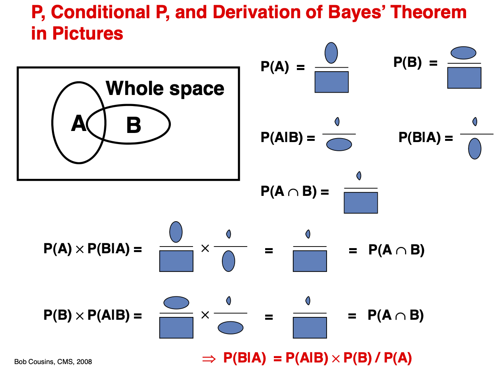

Probability theory#
What you need to know
Sample space \(\Omega\) is a set of elementary outcomes or events.
Events can contain more than one elementary event and can be constructed by forming subsets (\(A\), \(B\), \(C\) etc) of \(\Omega\)
Probability function P(A) assigns a numeric value to each event, A quantifying certainty of an event happening on a 0-1 scale.
Venn diagrams visualize P(A) as a “volume fraction” of our confidence in the event expressed on 0-1 scale.
Probability axioms define a set of logical rules for creating composite events from trivial ones.
Bayesian approach: In physical sciences and modeling one often deals with situations where counting is impossible. Hence, probability is interpreted as a degree of belief.
import numpy as np
import ipywidgets as widgets
import matplotlib.pyplot as plt
Sample space#
The sample space, often signified by an \(\Omega\) is a set of all possible elementary events. Elementary means the events can not be further broken down into simpler events. For instance, rolling a die can result in any one of six elementary events.
In the context of statistical mechanics, we are going to call states inside \(\Omega\) microstates. States of \(\Omega\) are sampled during a system trial, which could be done via an experiment or simulation.
Examples of Samples spaces#
If our trial is a single roll of a six-sided die, then the sample space will be:
A fair coin is tossed once
If a fair coin is tossed three times in a row, we will have sample space of size \(2^3\) (HTT, THT, TTH, THH, HTH, HHT, HHH, TTT)
Position of an atom in a container of size \(L_x\) along x. There will be a huge number of
Events#
An Event specifies the outcome of a trial. Generally an event can contain one or more elementary events from \(\Omega\).
In the contact of statistical mechanics we will refer to events containing multiple microstates as Macrostates.
Examples of events#
If we roll a die we can choose event to be getting a single number
Or we can choose event to be any even number:
A macrostate of a nitrogen molecule could be all positions of molecule in second half of container
Compute probabilities through counting#
We calculate probabilities of events as fractions in the sample space that events take up.
\(n(A)\) probability of event, e.g rolling an even number. The size of the event space is 3
\(n(\Omega)\) size of sample space. In the context of single die roll is equal 6
def probability(Omega={1,2}, A={1}):
'''
Compute the probability of event A given sample set Omega.
'''
return len(A)/len(Omega)
S={1,2,3,4,5,6,7,8,9,10}
E= {1, 4, 8}
probability(S,E)
0.3
S={1,2,3,4,5,6,7,8,9,10}
E= {1,4,5, 7}
probability(S,E)
0.4
Composite events and Venn diagrams#
%%capture
!pip install matplotlib-venn #install if running locally
import matplotlib_venn as venn
Requirement already satisfied: matplotlib-venn in /opt/homebrew/anaconda3/envs/llpsmd3/lib/python3.9/site-packages (0.11.6)
Requirement already satisfied: matplotlib in /opt/homebrew/anaconda3/envs/llpsmd3/lib/python3.9/site-packages (from matplotlib-venn) (3.5.1)
Requirement already satisfied: numpy in /opt/homebrew/anaconda3/envs/llpsmd3/lib/python3.9/site-packages (from matplotlib-venn) (1.23.5)
Requirement already satisfied: scipy in /opt/homebrew/anaconda3/envs/llpsmd3/lib/python3.9/site-packages (from matplotlib-venn) (1.10.1)
Requirement already satisfied: fonttools>=4.22.0 in /opt/homebrew/anaconda3/envs/llpsmd3/lib/python3.9/site-packages (from matplotlib->matplotlib-venn) (4.28.5)
Requirement already satisfied: packaging>=20.0 in /opt/homebrew/anaconda3/envs/llpsmd3/lib/python3.9/site-packages (from matplotlib->matplotlib-venn) (23.1)
Requirement already satisfied: python-dateutil>=2.7 in /opt/homebrew/anaconda3/envs/llpsmd3/lib/python3.9/site-packages (from matplotlib->matplotlib-venn) (2.8.2)
Requirement already satisfied: pillow>=6.2.0 in /opt/homebrew/anaconda3/envs/llpsmd3/lib/python3.9/site-packages (from matplotlib->matplotlib-venn) (9.2.0)
Requirement already satisfied: cycler>=0.10 in /opt/homebrew/anaconda3/envs/llpsmd3/lib/python3.9/site-packages (from matplotlib->matplotlib-venn) (0.11.0)
Requirement already satisfied: kiwisolver>=1.0.1 in /opt/homebrew/anaconda3/envs/llpsmd3/lib/python3.9/site-packages (from matplotlib->matplotlib-venn) (1.4.4)
Requirement already satisfied: pyparsing>=2.2.1 in /opt/homebrew/anaconda3/envs/llpsmd3/lib/python3.9/site-packages (from matplotlib->matplotlib-venn) (3.0.9)
Requirement already satisfied: six>=1.5 in /opt/homebrew/anaconda3/envs/llpsmd3/lib/python3.9/site-packages (from python-dateutil>=2.7->matplotlib->matplotlib-venn) (1.16.0)
Omega = {-1, 0, 1, 2, 3,4,5,7, 20, 90}
A = {1, 2, 3,4,5}
B = {0, 2, -1, 5,7}
C = {20, 90, 0}
venn.venn3([A, B, C], set_labels=('A','B', 'C'))
<matplotlib_venn._common.VennDiagram at 0x17c58c3d0>
Creating new events#
print("𝐴∩𝐵 = ", A&B)
print("𝐴∪B = ", A|B)
print("𝐴-B = ", A-B)
print("A^c = ", len(Omega-A))
print("B^c = ", len(Omega-B))
print("(𝐴∪𝐵)^c = ", len(Omega-(𝐴|𝐵)))
print("𝐴^c ∩ B^c = ", len((Omega-A)&(Omega-B)))
𝐴∩𝐵 = {2, 5}
𝐴∪B = {0, 1, 2, 3, 4, 5, 7, -1}
𝐴-B = {1, 3, 4}
Probability Axioms#
Positivity and Normalization
Probability of rolling each number is 1/6 and rolling any number is 1.
Addition rule
For any sequence of mutually exclusive events, \(A_i \cap A_j = \emptyset \), the probability of their union is the sum of their probabilities,
Probability of die rolling even number is: \(1/6+1/6+1/6\)
Product rule
When independent events \(A_i \cap A_j = \emptyset\), the probability of their intersection is a product of their probabilities
Probability of rolling twice getting 3 and 5 is: \(\frac{1}{6}\cdot \frac{1}{6}\)
Complement
Given that \(A \cap \bar A=\emptyset\) and \(A \cup \bar A=\Omega\).
the probability of not rolling a number: \(1-\frac{1}{6}\)
Conditional probability and Bayes Theorem
Knowledge of past events may change the probability of future events
the probability of getting 4 given that we have rolled an even number: \(p(4|even) = \frac{p(even|4)p(4)}{p(even)}=\frac{1\cdot 1/6}{1/2}=1/3\)
Examples
We roll two dice and record the total sum of numbers \(T\). Suppose event \(A\) is getting a total of \(T = 9\) and event \(B\) is getting a total of \(T = 5\). What is the probability of A or B?
Solution
A and B cannot both occur. The two events are mutually exclusive, and we can apply the sum rule.
There are 4 ways to get event A (T = 9), and also 4 ways to get event B (T = 5), so that there are 4 + 4 = 8 ways to get either A or B, and so \(P(A or B) = 8/36\)
Now suppose event C is getting a total of \(T = 12\) and event D is getting a double, where both dice are the same. What is the probability of C or D?
Solution
There is only one way to get 12, so P© = 1/36.
There are six ways to get a double, so P(D) = 6/36.
However, C and D are not exclusive; rolling a double six is an example of both.
The double six is already included in the P(D) calculation. So we use sum rule but make sure to account for double counting P(C or D) = 6/36 + 1/36 − 1/36 = 6/36
Joint, marginal and conditional probability#
Joint Probability \(P(A, B)\) Quantifies the probability of two or more events happening simultaneously.
Marginal Probability \(P(A)\) Quantifies the probability of an event irrespective of the outcomes of other random variables. Is obtained by marginalization, summing over all possibilities of B.
Conditional Probability \(P(A | B)\) Quantifies probability of event A given the information that event B happened.
We are counting the fraction of A and B overlap confined within the given event A
Note that joint probability is symmetric \(P(A, B) = P(B, A)\) while conditional probability is not! \(P(A | B) != P(B | A)\)

Bayes formula#
Prior, posterior and likelihood
The Bayes theorem provides a powerful way to test hypotheses and learn the parameters of a model from data. The jargon used when using the bayes formula differs slightly from the one given above.
\(P(H)\) is called prior and quantifies information we have about our hyothesis.
\(P(D)\) is called evidence and is just the probability of having the date we generated.
\(P(D|H)\) is called likelihood of data! It is not called probability because one is interested in how different values of \(H\) change the \(P(D|H)\).
\(P(H|D)\) is the quantity we are after is called called posterior
Example
A test for cancer is known to be 90% accurate either in detecting cancer if present or in giving an all-clear if cancer is absent.
The prevalence of cancer in the population is 1%. How worried should you be if you test positive? Try answering this question using Bayes’ theorem.
Solution
Accuracy of a test (how often positives show up when cancer is certain)
Only 1% of the population has cancer; hence, we get the probability of an individual having (not having) cancer as:
Now we have all terms to compute \(p(X|+)\) probability of disease given the positive test.
Combinatorics#
Combinatoric expressions are helpful for computing the size of events and answering questions such as “How many ways can molecules arrange in this or that way?”
If you are given n molecules in a jar, you have r ways of sampling them. You get different answers depending on whether molecules are distinguishable and whether sampling is done with or without replacement.
Sampling |
Combinatorics |
|---|---|
Ordered sampling without replacement |
\(\boxed{P^n_r = \frac{n!}{(n-r)!}}\) |
Unordered sampling without replacement |
\(\boxed{C^n_r = \frac{n!}{r!(n-r)!}}\) |
Ordered sampling with replacement |
\(\boxed{P^n_r = r^n}\) |
Unordered sampling with replacement |
\(\boxed{P^n_r = \frac{(n+r-1)!}{r!(n-1)!}}\) |
Multinomial combination.#
The combinatorial formula can be readily generalized for k>2 partitions. A classic problem we will encounter is partitioning \(N\) indistinguishable molecules among \(n_1\) energy level, \(n_2\), … \(n_k\). \(\sum n_i = N\)
Example: gas atoms
Consider a container filled with 1000 atoms of Ar.
What is the probability that the left half has 400 atoms?
\(n(A) = \frac{1000!}{400! \cdot 600 !}\)
What is the probability that the left half has 500 atoms?
\(n(B) = \frac{1000!}{500! \cdot 500 !}\)
What is a probability that 1/3 has 100 next 1/3 has 200 and next 1/3 has 700?
\(n(C) = \frac{1000!}{100!\cdot 200! \cdot 700!}\)
What is the total number of all possible partitionings or states of gas atoms in a container?
\(n(S) = \sum^{n=N}_{n=0}\frac{N!}{n!\cdot (N-n)!} = 2^N\) Each N lattice site in the container can be vacant or filled with \(2^N\) states.
Example: spins
Solid metal has 100 atoms. Magnetic measurements show that there are 10 atoms with spin down. If ten atoms are chosen at random, what is the probability that they all have spin up?
Solution
The total number of ways to choose any 10 atoms out of 100, regardless of spin is:
The number of ways to choose 10 atoms out of 90 with spin up is: $\(n(up) = \frac{90!}{10!(80)!}\)$
Probability of picking 10 up spins is: $\(p(up) =\frac{n(up)}{n(S)}\)$
def gas_partition(k1=30, k2=30, k3=30):
'''partitioning N gas molecules into regions k1, k2 and k3'''
from scipy.special import factorial
N = k1+k2+k3
return factorial(N) / (factorial(k1) * factorial(k2)* factorial(k3))
print( gas_partition(k1=50, k2=50, k3=0) )
print( gas_partition(k1=50, k2=47, k3=3) )
1.0089134454556417e+29
1.977470353093058e+33
Exercise
Plot how a number of configurations resulting from portioning molecules of gas into two regions depends on the ratio of molecules in compartments
Random variables#
A random variable X is a variable whose value depends on the outcomes of a random phenomenon. \(X(\omega)\) is a function from possible outcomes of a sample space \(\omega \in \Omega\).
For a coin toss \(\Omega={H,T}\) \(X(H)=+1\) and \(X(T)=-1\). Every time the experiment is done, X returns either +1 or -1. We could also make functions of random variables, e.g., every time X=+1, we ear 25 cents, etc.
Random variables are classified into two main types: discrete and continuous.
Discrete Random Variable: It assumes a number of distinct values. Discrete random variables are used to model scenarios where outcomes can be counted, such as the number of particles emitted by a radioactive source in a given time interval or the number of photons hitting a detector in a certain period.
Continuous Random Variable: It can take any value within a continuous range. These variables describe quantities that can vary smoothly, such as the position of a particle in space, the velocity of a molecule in a gas, or the energy levels of an atom.
Probability distribution of random variable#
For any random variable X, we are interested in finding probability distribution over possible values \(x\) that \(X\) takes: \(p_X(x)\).
Note the very subtle but crucial difference between \(x\) (1-6 for a die) and a random variable \(X\), which generates numbers \(x\) according to distributions \(p(x)\)
Expectation#
\(E[x]\) is the theoretical value of the mean as opposed to the sample mean which we compute in simulations. For instance, consider the difference between the average height of people calculated from a small sample of cities versus that from the entire world population. Will see that with enough sampling the sample mean approaches its expectation. expectation can apply to 1 (normalization) to variable (mean) or any function of variable, e.g mean subtracted square (variance).
Variance (fluctuation)#
Variance is an expectation of squared deviation of x from expectation, which characterizes the spread in values of x.
Sum of two random variables#
Consider sum of two random variables, suppose these are sum of numbers from two dies or sum of two coin flips. Obviously sums of random variables are random variables themselves.
Expectation is always a linear operator as you can verify by plugging in definition and using linear property of definite integrals.
We see that Variance, in general, is not a linear operator.
Denoting mean subtracting variables \(Y_i=X_i-E[X_i]\) we can show this by expanding square in the expectation expression.
We will see in the next section that for independent random variables the last cross terms is zero. This property has huge significance for statistical mechanics, statistics and sciences in general
Random numbers in python#
The numpy.random has the fastest random number generators based on low-level code written in C.
The Scipy.stats has an extensive library of statistical distributions and tools for statistical analysis.
First, we take a look at the most widely used random numbers of numpy, also called standard random numbers. These are rand (uniform random number on interval 0,1) and randn (stnadard average random number with 0 mean and 1 variance).
When running code that uses random numbers results will always differ for every run. If you want code to reproduce the same result, you can fix the seed to get reproducible results:
np.random.seed(8376743)To convert random variables to probability distributions we need to generate large enough sample then perform histogramming via
np.histor directly histogram and visualize by one shot viaplt.hist()
X = np.random.rand(30)
print(X)
plt.plot(X)
[0.20919642 0.08168559 0.25923677 0.16511284 0.28205107 0.1217224
0.72801387 0.99748365 0.99916696 0.0561063 0.61468294 0.44494732
0.5645931 0.98582454 0.43754022 0.95597291 0.98847772 0.05729081
0.98535835 0.93270706 0.541579 0.72490446 0.47404761 0.16810326
0.77048336 0.58755584 0.47122295 0.01522511 0.48206132 0.94743642]
[<matplotlib.lines.Line2D at 0x1828fadf0>]
counts, edges = np.histogram(X, range=(0,1), bins=20)
counts, edges
(array([1, 3, 1, 2, 1, 2, 0, 0, 2, 3, 1, 2, 1, 0, 2, 1, 0, 0, 2, 6]),
array([0. , 0.05, 0.1 , 0.15, 0.2 , 0.25, 0.3 , 0.35, 0.4 , 0.45, 0.5 ,
0.55, 0.6 , 0.65, 0.7 , 0.75, 0.8 , 0.85, 0.9 , 0.95, 1. ]))
plt.hist(X, density=True)
(array([1.35509362, 1.35509362, 0.67754681, 0. , 1.69386703,
1.01632022, 0.33877341, 1.01632022, 0. , 2.71018724]),
array([0.01522511, 0.11361929, 0.21201348, 0.31040766, 0.40880185,
0.50719604, 0.60559022, 0.70398441, 0.80237859, 0.90077278,
0.99916696]),
<BarContainer object of 10 artists>)
Exercise
Using the uniform random number generator simulate tossing of a coin which generates +1 and -1 values with equal probabilities
Probability distributions#
def rnplot(r):
'''Convenience function for making quick two-panel plot showing
a line plot for the sequence of random numbers (RN)
a histogram plot of the probability density of random numbers
'''
fig, ax = plt.subplots(ncols=2)
ax[0].plot(r, color='blue', label='trajectory')
ax[1].hist(r, density=True, color='red', label = 'histogram')
ax[0].set_xlabel('Samples of RN')
ax[0].set_ylabel('Values of RN')
ax[1].set_xlabel('Values of RN')
ax[1].set_ylabel('Probability Density')
fig.legend();
fig.tight_layout()
Uniform#
Probability distribution
\(E[x] = \frac{1}{2}(a+b)\)
\(V[x] = \frac{1}{12}(a-b)^2\)
Random Variable
\(U(a, b)\) modeled by
np.random.uniform(a,b, size=(N, M))\(U(0, 1)\) modeled by
np.random.rand(N, M, P, ...)
np.random.rand(5)
array([0.32733942, 0.73543281, 0.73465775, 0.40099407, 0.6723935 ])
r = np.random.rand(200)
rnplot(r)
Binomial#
Probability Mass Function#
\(E[n] = Np\)
\(V[n] = 4Np(1-p)\)
Random Variable
\(B(n, p)\) modeled by
np.random.binomial(n, p, size)
np.random.binomial(n=10, p=0.6, size=20)
array([ 7, 4, 8, 7, 5, 4, 4, 8, 5, 5, 7, 5, 5, 5, 10, 8, 7,
6, 4, 9])
r = np.random.binomial(n=10, p=0.6, size=2000)
rnplot(r)
Gaussian#
\(E[x] = \mu\)
\(V[x] = \sigma^2\)
Random Variable
\(N(a, b)\) modeled by
np.random.normal(loc,scale, size=(N, M))\(N(0, 1)\) modeled by
np.random.randn(N, M, P, ...)
# For a standard normal with sigma=1, mu=0
r = np.random.randn(200)
# For a more general Gaussian
rgauss = np.random.normal(loc=2., scale=5, size=200)
rnplot(r)
Transforming random variables#
Changing from random variable X to a new variable \(Y=f(X)\) leads to a relation between two probability functions where the multiplying factor is jacobian. E.g think of a factor accounting for changing the spacing between points (or volumes) \(p(x)dx=p(y)dy\)
Let us consider addition \(Y=X+a\) where we have \(p(y)=p(x+a) \cdot 1\) and multiplication \(Y=aX\) where we have \(p(y) = p(x)\cdot \frac{1}{a}\)
These transformations mean we can shift average by a constant factor \(E[X+a]=E[X]+a\). And when the original variable is multiplied by a constant factor \(a\) the variance become \(a^2\) times more: \(V[ax] = a^2V[x]\).
As an example we can use standard uniform and standard normal to carry out the following transformations:
Exact vs sampled probability distributions#
scipy.stats contains a large number of probability distributions. Explores examples there
from scipy.stats import binom, norm, poisson
xmin, xmax, step = -5, 5, 1000
dx = (xmax-xmin)/step
x = np.linspace(xmin, xmax, step)
px = norm.pdf(x)
print('normalization', np.sum(px*dx))
normalization 0.998999442013342
r = np.random.randn(100)
plt.hist(r, density=True, label=f'Sampled mean={r.mean():.2f}, var={r.var():.2f}');
plt.plot(x, px,'k', label='Exact mean=0, var=1')
plt.legend(loc=2)
plt.ylabel('$p(x)$')
plt.xlabel('$x$')
Text(0.5, 0, '$x$')
Problems#
Smart gambler.
You flip a coin 10 times and record the data in the form of head/tails or 1s and 0s
What would be the probability of ladning 4 H’s?
What would be the probability of landing HHHTTTHHHT sequence?
In how many ways can we have 2 head and 8 tails in this experiments?
Okay, now you got tired of flipping coins and decide to play some dice. You throw die 10 times what is the probability of never landing number 6?
You throw a die 3 times what is the probability of obtaining a combined sum of 7?
Practicing counting. Gas molecules.
A container of volume \(V\) contains \(N\) molecules of a gas. We assume that the gas is dilute so that the position of any one molecule is independent of all other molecules. Although the density will be uniform on the average, there are fluctuations in the density. Divide the volume \(V\) into two parts \(V_1\) and \(V_2\), where \(V = V_1 + V_2\).
What is the probability p that a particular molecule is in each part?
What is the probability that \(N_1\) molecules are in \(V_1\) and \(N_2\) molecules are in \(V_2\)?
What is the average number of molecules in each part?
What are the relative fluctuations of the number of particles in each part?
Binomial, Gaussian and Poisson: The 3 distributions to know before heading to Las Vegas.
Show that in large number limit binomial distribution tends to gaussian. Show is by expanding binomial distirbution \(logp(n)\) in power series showing that terms beyond quadratic can be ignored.
In the limit \(N\rightarrow \infty\) but for very small values of \(p \rightarrow 0\) such that \(\lambda =pN=const\) there is another distribution that better approximates Binomial distribution: \(p(x)=\frac{\lambda^k}{k!}e^{-\lambda} \) It is known as Poisson distribution.
Poisson distribution is an excellent approximation for probabilities of rare events. Such as, infrequently firing neurons in the brain, radioactive decay events of Plutonium or rains in the desert.
Derive Poisson distribution by taking the limit of \(p\rightarrow 0\) in binomial distribution.Using numpy and matplotlib plot binomial probability distribution against Gaussian and Poisson distributions for different values of N=(10,100,1000,10000).
For a value N=10000 do four plots with the following values p=0.0001, 0.001, 0.01, 0.1. You can use subplot functionality to make a pretty 4 column plot. (See plotting module)
fig, ax = plt.subplots(nrows=1, ncols=4)
ax[0].plot()
ax[1].plot()
ax[2].plot()
ax[3].plot()
Optional Project: Porosity of materials
A simple model of a porous rock can be imagined by placing a series of overlap- ping spheres at random into a container of fixed volume \(V\) . The spheres represent the rock and the space between the spheres represents the pores. If we write the volume of the sphere as v, it can be shown the fraction of the space between the spheres or the porosity \(\phi\) is \(\phi =e^{-Nv/V}\), where \(N\) is the number of spheres.
For simplicity, consider a 2D system, (e.g \(v=\frac{1}{4}\pi d^2\), see wiki if you forgot the formula). Write a python function which place disks of \(d=1\) into a square box. The disks can overlap. Divide the box into square cells each of which has an edge length equal to the diameter of the disks. Find the probability of having 0, 1, 2, or 3 disks in a cell for \(\phi\) = 0.03, 0.1, and 0.5.
You will need np.random.uniform() to randomly place N disks of volume v into volume V. Check out this cool python lib for porosity evaluation of materials R Shkarin, et al Plos Comp Bio 2019